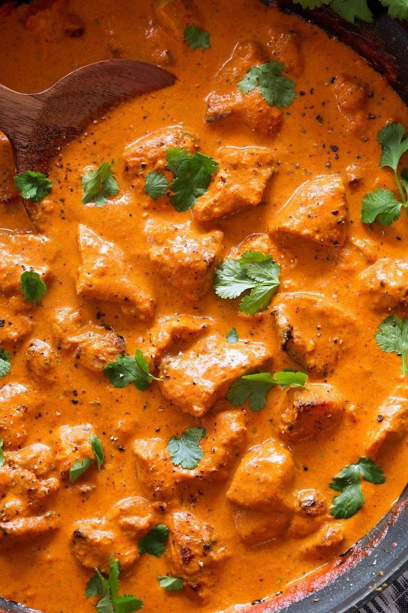
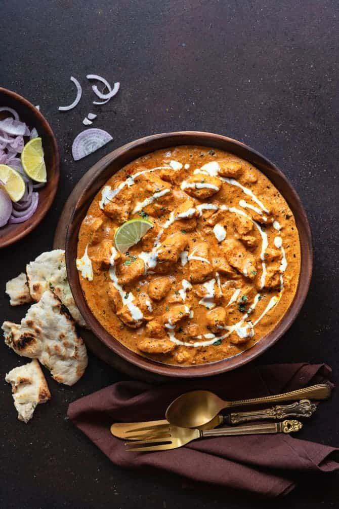
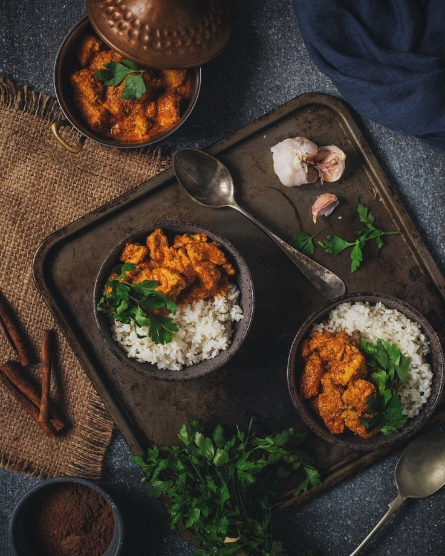

Ingredients:
- 500g chicken, cut into pieces
- 1 cup tomato puree
- 1/2 cup cashew paste
- 1 cup cream
- 2 tbsp butter
- 1 tbsp ginger-garlic paste
- 1 tsp red chili powder
- 1 tsp garam masala
- Salt to taste
- Fresh coriander for garnish
Instructions:
- Heat butter in a pan and sauté chicken pieces until they turn golden brown. Set aside.
- In the same pan, add more butter if needed. Add ginger-garlic paste and sauté until fragrant.
- Add tomato puree and cashew paste. Cook until the mixture thickens, and the oil starts to separate.
- Season with red chili powder, garam masala, and salt. Adjust the spice level according to your preference.
- Return the sautéed chicken to the pan, coating it well with the sauce. Allow it to simmer for a few minutes.
- Pour in the cream, stirring continuously. Simmer until the chicken is fully cooked and the flavors meld together.
- Garnish with fresh coriander before serving. Butter Chicken pairs wonderfully with naan or rice.
[Back to Catalog]